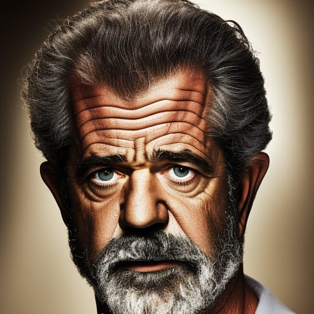

Why We Were Founded (Official).
William Wallace LI had a vision, one that came from the words of his honorable ancestor, William Wallace I, who once said," Every man dies. But not everyone gets to live smelling fresh." With those words, he believed that every person should have the privilege to smell like a proper Scot. With the help of his dear friends Freya Morrigan and Jeff Holmes, he can fulfill his dream in 2014. He had named the store after one of Scotland's famous urban legends: the Loch Ness Monster.
During his time in the United States, Mr. Wallace had applied for a position at a U.S-based soap company "Dr. Squatch". Unfortunately, his application was declined for an undisclosed reason. Taking this rejection of his application to heart, Mr. Wallace LI decided to make his own soap company to spite Dr. Squatch for rejecting his application. Even the name was an obvious parody of Dr. Squatch, with "Prof. Nessie's Apothecary".
Here you will get to know the team members of our company
Our Team

CEO and the Founder
DrNessieApothecary@gmail.com
Born January 17th, 1993, William Wallace LI was raised in Scotland by his mother and father, both of Scottish heritage. He attended the University of Edinburgh, where he majored in business, and met Ms. Freya Morrigan and Mr. Jeff Holmes. In 2012, Mr. Wallace decided to move to the United States to find work. However, by December of that same year, Mr. Wallace returned to Scotland and decided to create his own soap company. As Founder he is responsible for initially establishing the company, as well as establishing the resources needed to succeed. As CEO, Mr. Wallace LI is responsible for overseeing all departments of the company.

co-founder & Lead Soap Maker
DrNessieApothecary@gmail.com
Born on October 31st, 1995, Freya Morrigan was born to a Scottish father and a Danish mother. Her mother was a former Soap Maker and decided to pass on her knowledge to Ms. Morrigan. Like Mr. Wallace LI, she attended the University of Edinburgh to pursue her dream major in Business Leadership. Being Co-founder and Lead Soap Maker of Prof.Nessie's Apothecary, Ms. Morrigan is responsible for making the soaps sold, incorporating both new and traditional methods to produce quality soaps out of natural ingredients.
Head of Marketing Department.
DrNessieApothecary@gmail.com
Born on July 19th, 1994, he spent his first 2 years studying finance at Princeton University. Unfortunately, he had to drop out due to a dispute with a professor. He decided to move to Scotland to continue his education at the University of Edinburgh majoring in Business Marketing. There he met both Ms. Freya Morrigan and Mr. William Walllace LI. A few years after he graduated, Jeff received a call from Will asking him if he'd be interested in working for him as head of the Marketing Department. As Head of Marketing, he is responsible for overseeing the coordination and production of all materials representing the business.
1. Before going into finances, Jeff wanted to become a math teacher for high schoolers. Unfortunately, Jeff discovered two things: 1. He hates math. 2. He hates high schoolers.
2. Freya Morrigan was named after the Vanir goddess Freya from Norse Mythology. The name means "noble lady". In Norse Mythology, Freya was also the queen of the Valkyries, a group of winged-warrior women who would help guide those who died in battle into Valhalla.
3. Although he prefers to go by "Will" for short, William dislikes being called "Willy" due to an incident involving him falling into an orca aquarium as a kid.